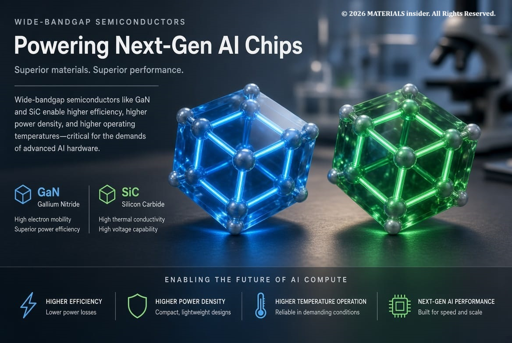
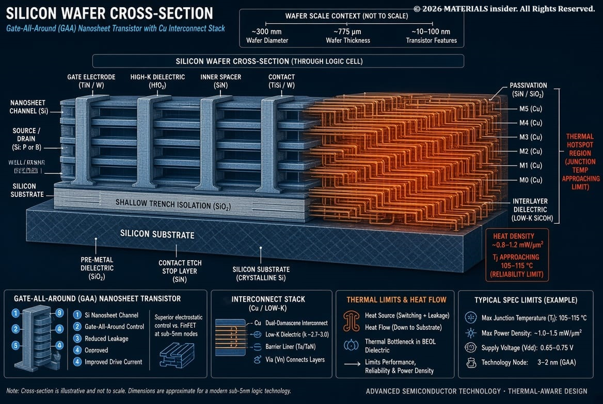
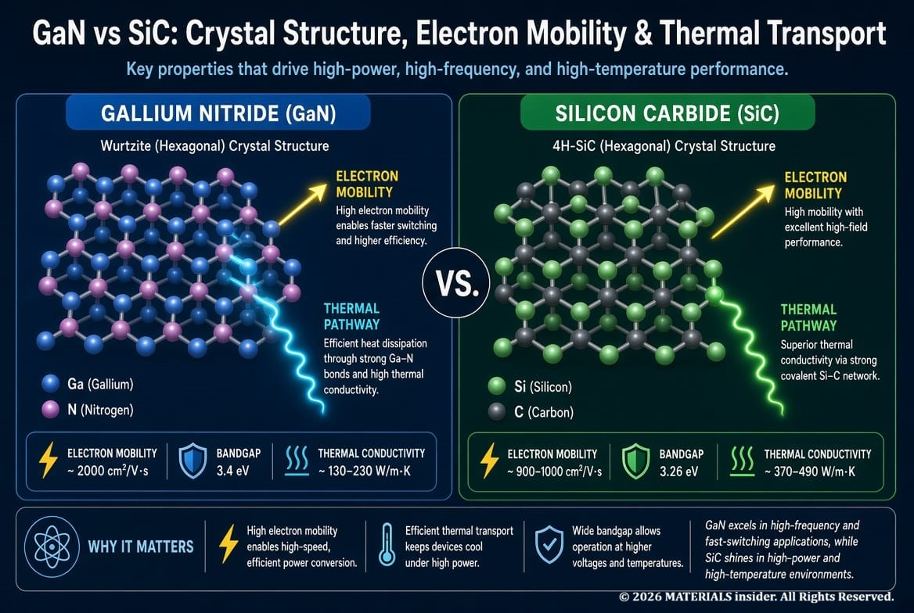
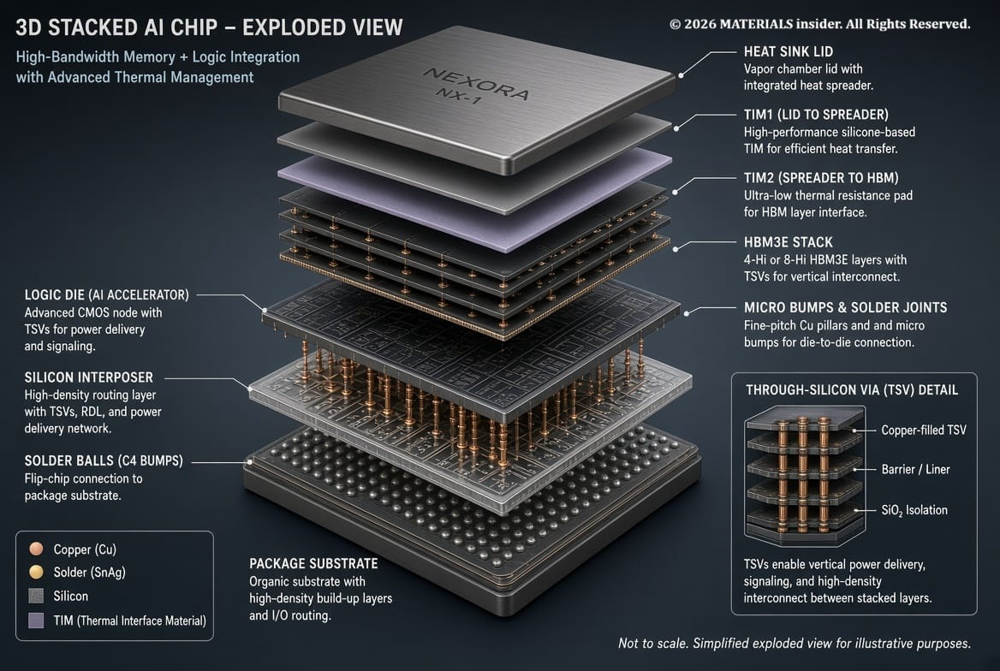
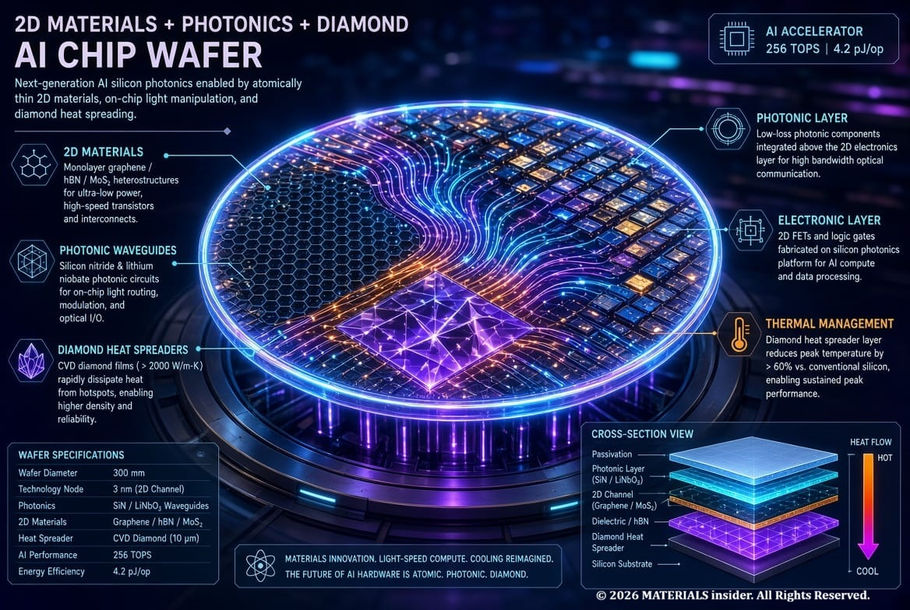
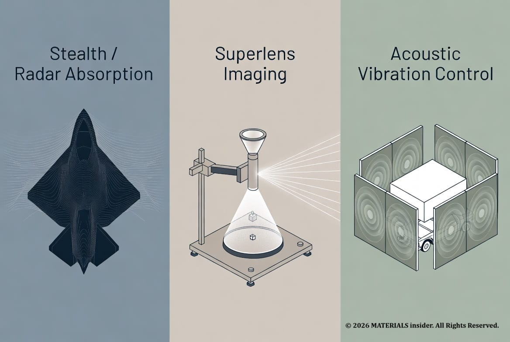

The Hidden Materials Powering the AI Revolution
AI is booming, but few people understand the materials behind it. Every ChatGPT query, every image generation, every self-driving decision runs on physical chips built from carefully engineered atoms. The real race isn’t just algorithms. It’s the materials that make those algorithms possible at scale.
We’re going to pull back the curtain on the semiconductor materials, the limits of silicon, the rise of gallium nitride and silicon carbide, advanced packaging tricks, and the future materials that could redefine AI hardware. This is pure materials science meeting the AI explosion.

AI rendered image of wide-bandgap crystal lattices at the heart of modern AI accelerators!
Semiconductor Materials: The Foundation of AI Compute !
Modern AI hardware lives and dies by semiconductor materials. Silicon still dominates logic chips and memory, but the demand for higher performance, lower power, and better heat handling is pushing the industry far beyond pure silicon.
Semiconductors sit between conductors and insulators. Their bandgap needed to determins how electrons switch, how hot they run, and how efficiently they move data. Silicon’s 1.12eV bandgap has powered everything from early transistors to today’s GPUs. Yet AI training clusters now consume megawatts, and data-center power demand is projected to keep climbing. Materials with wider bandgaps, higher electron mobility, and superior thermal conductivity are stepping up.
Compound semiconductors like Gallium Arsenide (GaAs) have long served high-frequency roles. Today the spotlight is on wide-bandgap materials that can handle the extreme voltages, frequencies, and temperatures of AI power delivery and high-speed interconnects.
Silicon Limitations: Why the Classic Material Is Hitting a Wall!
Silicon is abundant, cheap to process at scale, and forms an excellent native oxide. Those advantages built the entire semiconductor industry. But physics is catching up.
At advanced nodes (2nm and below), quantum tunneling increases leakage of power. Heat density in AI accelerators can exceed what silicon can efficiently remove. Electron mobility plateaus, and the classic planar transistor has already given way to FinFETs and Gate-All-Around (GAA) designs just to keep scaling. Copper interconnects suffer rising resistance as features shrink.
Silicon alone cannot deliver the energy effectively what AI demands for their work loads. The industry is therefore combining silicon with complementary materials and moving to three-dimensional architectures.

Schematic of silicon’s thermal and scaling challenges in dense AI chips.
Gallium Nitride and Silicon Carbide: The Wide-Bandgap Heroes!
Enter Gallium Nitride (GaN) and Silicon Carbide (SiC) — two wide bandgap semiconductors already transforming power electronics and now moving deeper into AI infrastructure.
GaN (bandgap ~3.4 eV) offers high electron mobility and can switch at much higher frequencies than silicon with lower losses. It shines in power supply units for servers, RF components, and fast chargers that keep AI clusters online. SiC (bandgap ~3.2 eV) brings exceptional thermal conductivity and high breakdown voltage, making it ideal for high-power conversion in data centers and electric vehicle systems that share the same material ecosystem.
Both materials reduce energy waste as heat. In AI data centers, every watt saved in power conversion is a watt that can go to actual compute. Production is scaling rapidly, supported by government initiatives and foundry investments, though cost and substrate quality remain active challenges.
These materials echo the kind of atomic level engineering we explored in our perovskite solar cell deep dive—where choosing the right atoms and lattice softness unlocks performance nature never intended.

GaN and SiC lattices enabling cooler, faster power delivery for AI hardware.
Advanced Chip Packaging: Stacking Performance Beyond the Die!
Even the best materials need smart packaging. Traditional single die packages cannot keep up with the bandwidth and density AI requires.
Advanced packaging techniques 2.5D interposers, 3D stacking with Through-Silicon Vias (TSVs), hybrid bonding, and chiplet architectures let engineers place High Bandwidth Memory (HBM) right next to logic, shorten interconnect distances, and mix silicon with other materials in the same package. Thermal interface materials, advanced underfills, and new metals such as molybdenum for contacts further improve performance and reliability.
The result is higher effective compute density without forcing every transistor onto the same imperfect silicon process. Packaging has become a materials-engineering discipline in its own right.

Modern 3D packaging stacking logic and memory for AI-scale bandwidth.
Future Materials for AI Hardware!
Looking ahead, researchers are exploring two dimensional materials (MoS₂, WSe₂), topological materials, diamond, gallium oxide, and even photonics-integrated platforms. These candidates promise better mobility at atomic thicknesses, lower resistance interconnects, or optical data movement that sidesteps copper’s limits entirely.
AI itself is accelerating the discovery process screening millions of potential compositions and predicting properties far faster than traditional trial and error. Autonomous labs and materials informatics platforms are already shortening the path from theory to wafer.
Sustainability is also rising: recycled metals, lower-temperature processes, and materials that enable more efficient computing all matter as AI’s energy footprint grows.
The same spirit of deliberate atomic arrangement that turned ordinary sand into silicon chips—and later into metamaterials that bend light is now rewriting the hardware foundation of artificial intelligence.

Vision of next-generation AI hardware blending novel materials and photonic integration.
The Bottom Line!
The AI revolution is not purely digital. It rests on silicon still doing the heavy lifting, GaN and SiC handling power more efficiently, advanced packaging squeezing every last bit of performance from the available atoms, and a pipeline of future materials waiting in labs worldwide.
Next time an AI model like chatGPT, GROK, OpenClaw, Midjourney, Gemini surprises you, remember the hidden materials race that made it possible. Atoms arranged just right on a wafer, in a package, or in a new crystal are powering the intelligence we now take for granted.
Stay curious. The universe of Materials is still wide open.
Key Original Papers & References!
- Applied Materials announcements on GAA transistor and wiring innovations for AI chips (2026).
- SEMI technical deep dive: Devices, Materials, and Manufacturing for Sustainable AI.
- Reviews on gallium-based semiconductors and wide-bandgap power devices (Advanced Functional Materials, 2026).
- MIT and other institutional work on 3D chip stacking and materials discovery accelerated by AI.
- Perovskite work referenced in our earlier article on atomic engineering for solar cells (Materials Insider)
- Foundational metamaterials papers (Pendry, Smith, etc.) discussed in our cloaking article.
Top viewed articles:

Impossible Engineering for Stealth and Cloaking : Metamaterials
Imagine slipping on a jacket that bends light around you so perfectly that you vanish from sight. Theese crazy properties come from structure, not chemistry. This isn’t just lab magic. Metamaterials are already showing up in serious tech.
Read Full Article →
The Shape Memory Alloy: The Magic Metal That Remembers Its Shape
Imagine bending a thin metal wire into any shape you want — a zigzag, a loop, or even crumpling it — and then simply dipping it in hot water or warming it gently. Within seconds, it snaps back perfectly to its original straight form, as if it has a built-in memory.
Read Full Article →Share this article: